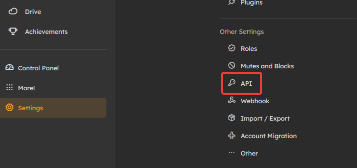

Welcome to Cardboard! If you're new to programming, then it can be a daunting task to set up a bot. But, we have your back!
ℹ️ You should keep in mind, screenshots are taken from Sharkey - a soft fork of Misskey. Things may look a bit different on your instance.
While we're still working on getting Cardboard to 100%, you'll need to use a Typescript-friendly compiler. In this instance, we recommend Bun for this task!
We assume you already have NodeJS installed. To install bun, run this command:
$ npm install -g bun
$ bun init
once complete, you can now initialize bun, and run cardboard!
$ bun init
$ bun add @kitsu-org/cardboard
When using *Key for programmatic access, there's a couple things you should keep in mind.
To get an API key, go to [Settings], then [API Key]. 
Then, you can [Generate access token]. Give it a memorable name, and offer it the permissions you want.
Keep in mind... The bare minimum permission that Cardboard needs is "View your account information". This is because an authentication check is reliant on it.
In this case, if your bot is messaging users pictures for example, you'll need:
Now that you have a key, and you have your environment setup, we're going to make a ping-pong bot. Essentially, when your bot receives a message that says "ping", it'll respond "pong!"
First, make a file in your root called .env. we'll store your API key here.
API_KEY=YourAwesomeApiKeyGoesHere
INSTANCE=YourInstanceGoes.Here
Now that you have put your keys into a .env file, you can open up the index file.
import { CardboardClient } from '@kitsu-org/cardboard';
const cardboard = new CardboardClient(bun.env.INSTANCE, bun.env.API_KEY);
// We should know when Cardboard is ready for commands!
// This'll let us know.
cardboard.on("ready", async () => {
cardboard.logger.log("Ready!")
});
//When someone mentions us, we'll take the mention out of the text, then we'll see if it equals to "ping". If it does, we'll say pong!
cardboard.on("mention", async (msg) => {
if (
msg.note.text.includes("ping")
) {
await msg.reply("Pong!");
}
});
cardboard.connect();
All there's left is just to bun run index.ts and you're now running your first ever bot with cardboard! 👏